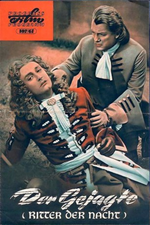
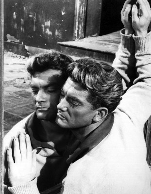

#9296 Der Gejagte
Alternativ: Le Bossu (Englischer Titel) Ritter der Nacht
 
 IMDB-Wertung: 7.0 / 10
IMDB-Wertung: 7.0 / 10  Metascore: 0
Metascore: 0 
Ein finsterer Fürst begeht am Hofe des Sonnenkönigs einen Meuchelmord. Zu Unrecht fällt der Verdacht auf den Edelmann Chevalier, der sich in seiner Not nach Spanien absetzt. Als er 16 Jahre später nach Paris zurückkehrt, brechen harte Zeiten für den wahren Täter an…
Jahr: 1959
Dauer: 104 Minuten
FSK: 12
Land: Frankreich Studio: Pallas FilmverleihTonspuren:
Untertitel: Deutsch,
Auflösung: 1080p (1920x824) Größe: 7833 MB
Genre: Action, Abenteuer
Regisseur: André Hunebelle
Drehbuch: Pierre Foucaud
Soundtrack: Jean Marion
Darsteller:
-  Jean Marais als Henri de Lagardère
 Bourvil als Passepoil
Bourvil als Passepoil- Sabine Sesselmann als Aurore de Nevers / Isabelle de Caylus
 Paulette Dubost als Dame Marthe
Paulette Dubost als Dame Marthe Georges Douking als Le marquis de Caylus
Georges Douking als Le marquis de Caylus Pâquerette als Une vieille gitane
Pâquerette als Une vieille gitane- Jean Le Poulain als Peyrolles
- Hubert Noël als Philippe de Nevers
- Edmond Beauchamp als Don Miguel
- Alexandre Rignault als L'aubergiste
- Paul Cambo als Philippe d'Orléans
- Annie Anderson als Une invitée au bal
- François Chaumette als Philippe de Gonzague
- Raoul Billerey als
- Barbara Cruz als
- Claude Carliez als
- Rosita Fernandez als
- Guy Delorme als
- Juliette Vilno als
- Jean Rougerie als
- Edmond Tamiz als Un gitan
- Jacques Herrieu als
- Alain Nobis als
- Christian Brocard als
- Bernard Dhéran als Narrator
- René Roussel als
- Jean-Michel Rouzière als
- Françoise Deldick als (uncredited)
- Monique Just als (uncredited)
- Rico Lopez als Petit role (uncredited)
Datei: X:\1950-1959\Gejagte, Der (1959, FSK12, 1920x824).mkv seit 23.07.2018
Festplatte: HD 1900-1970
 Es gibt insgesamt 141 Filme in der Gruppe '1950-1959'
Es gibt insgesamt 141 Filme in der Gruppe '1950-1959'